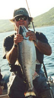

The singular beauty, vivid characterizations, and extraordinary drama and diversity are the hallmarks of this European-born artist. Nenad Mirkovich and Donna Petrovic.
Mirkovich's talent for creating artistic certainty in his compositions is exceptional.
The man whose first name means "surprise" in his native language delivers that element in his paintings of tranquil landscapes, crashing coastlines, peaceful symphonies, and energetic jazz bands.
Collectors of all ages and of varied lifestyles find something in the diverse repertoire of Nenad Mirkovich to delight the senses.
He delights himself with the reactions of viewers when they discover that the same talented artist painted all these scenes. Nenad Mirkovich says the varied subject matter and styles he uses in his work are not so different as they first seem, however.
His paintings comprise juxtapositions of opposites—high drama with peaceful beauty, darkness and shadow with light and sunshine, movement with quiet. In a face or in a landscape, the elements that provide the surprise are much the same.
Born in Belgrade in 1951, Mirkovich has made his home in Houston, Texas, since 1985. He began painting and drawing as a young child, and his background as a portrait painter and magazine illustrator in Yugoslavia helped him to develop his varied styles, says his wife, Donna.
His passions besides painting are fishing and cooking. He owns more than 150 fishing rods, makes his own lures, and can sit in a boat for hours and hours, pulling out fish, Donna says. He also is a gourmet cook, and has developed a favorite dish he calls Nenad Chicken.
A fourth passion is music, which Mirkovich often combines with his art. Working mostly at night, Mirkovich paints with music playing in the background, usually jazz or classical pieces.
Often, also, there is music on his canvas; musicians and musical groups are favorite themes. One of a recently completed series featuring jazz groups, painted in an impressionist style, is titled In the Mood. The piece has both high energy and high drama and will appeal to both beginning collectors and music enthusiasts.